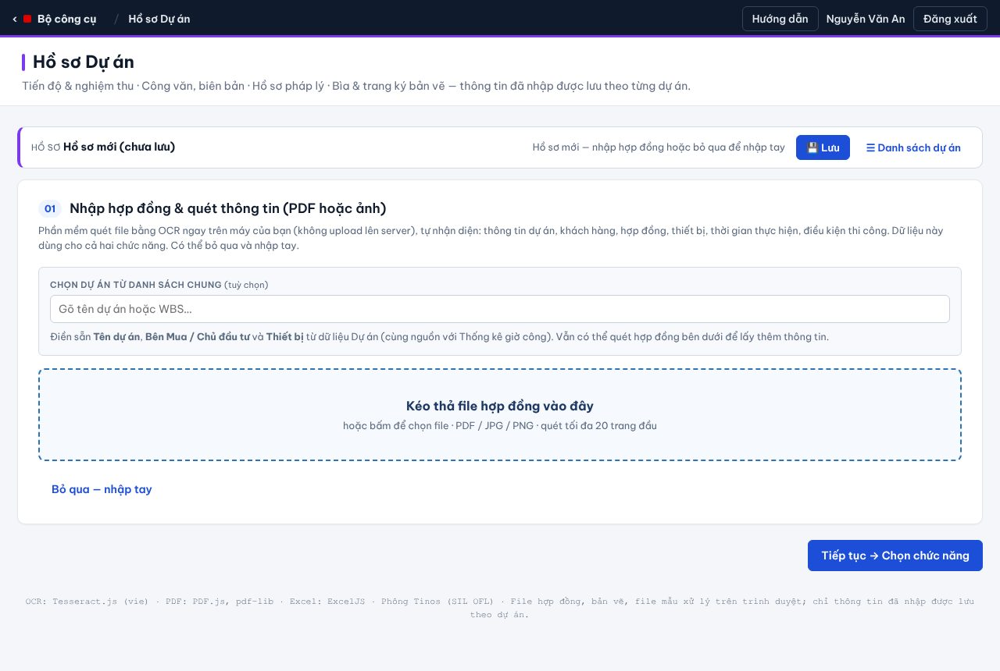
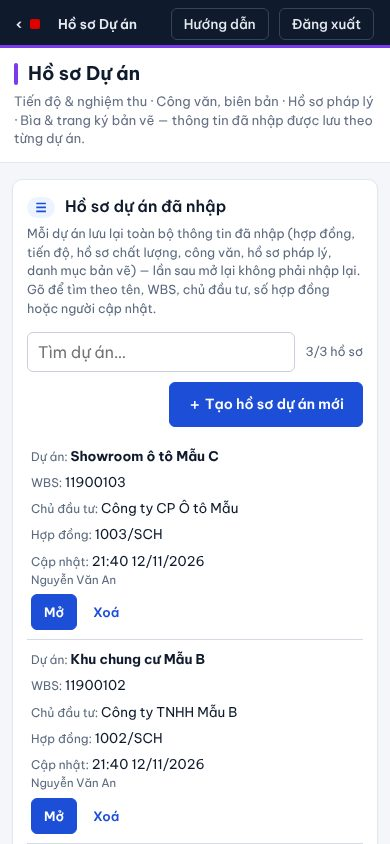
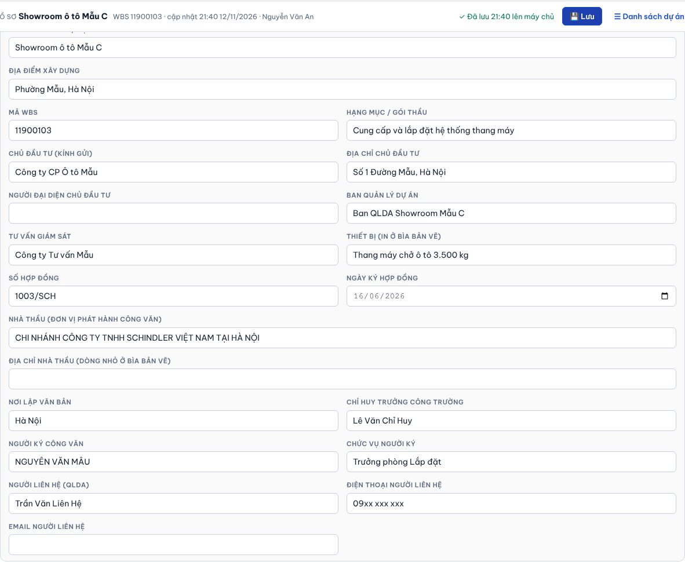
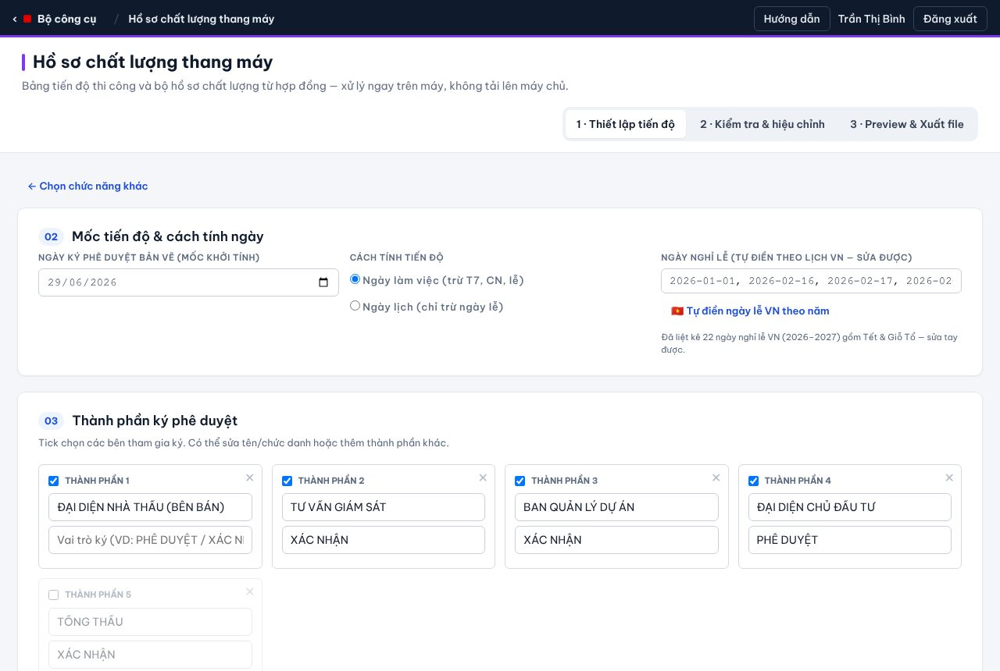
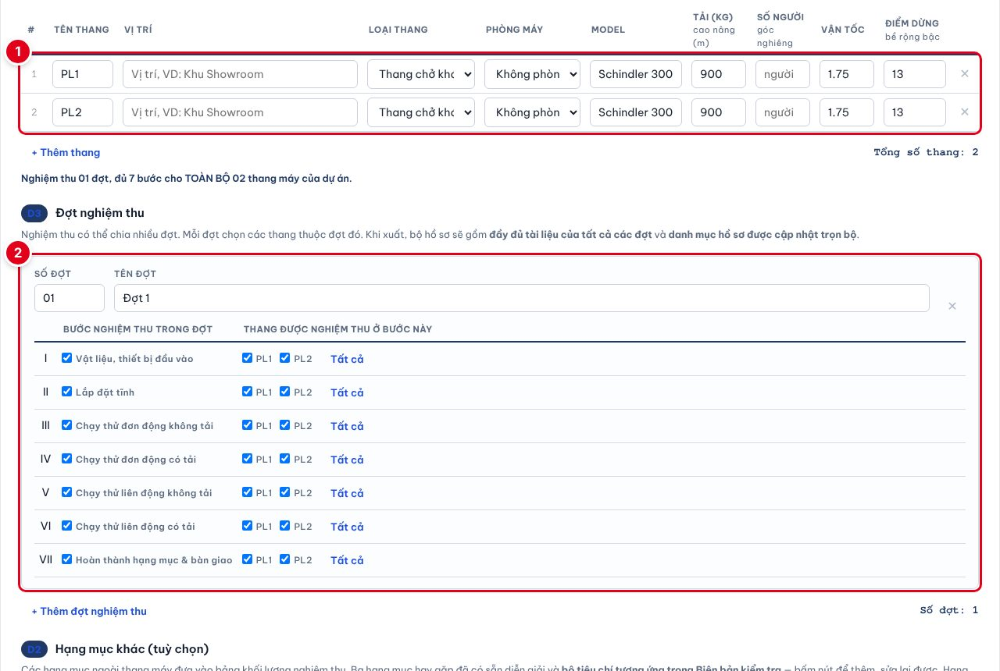
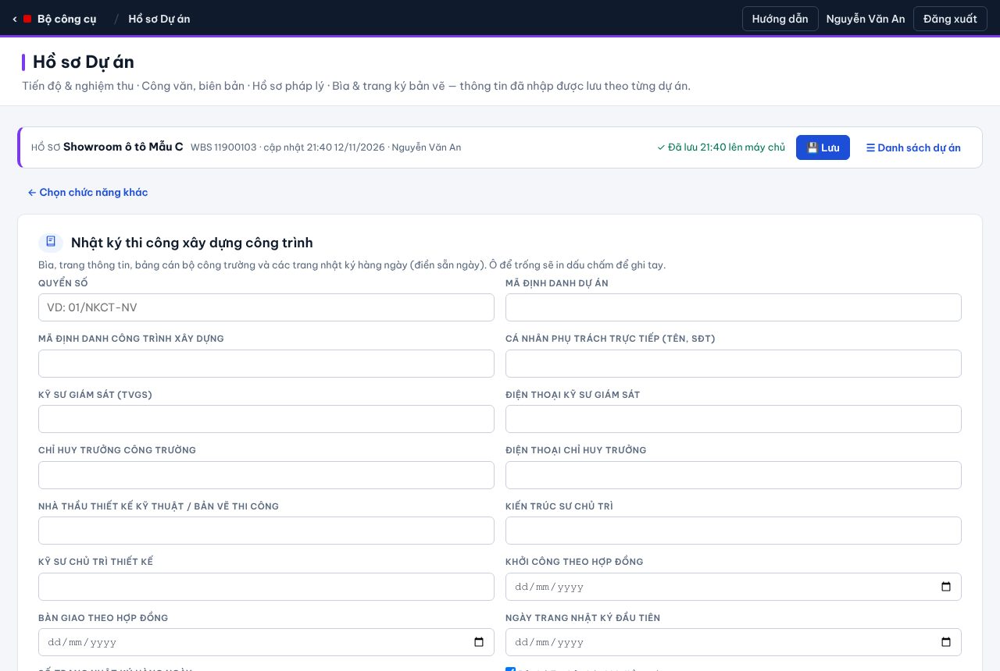
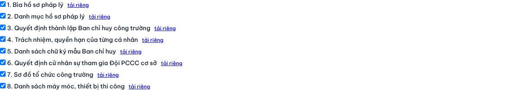
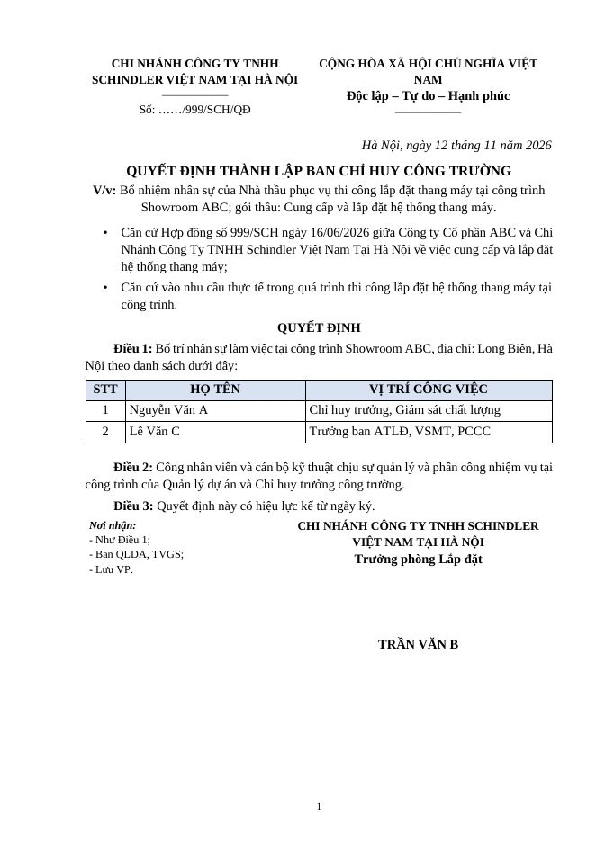
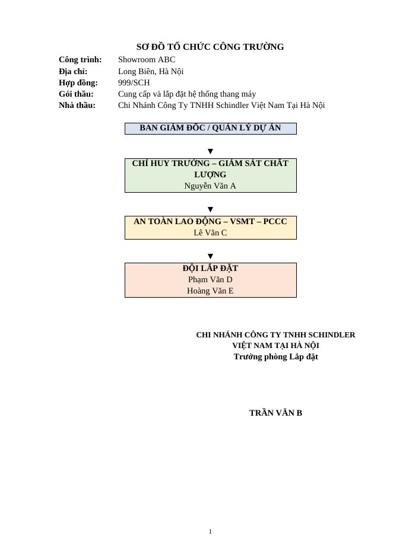
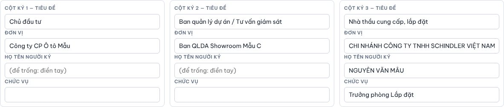

1Tổng quan 4 chức năng
Mỗi dự án là một hồ sơ. Trong hồ sơ có 4 chức năng dùng chung dữ liệu hợp đồng và thông tin dự án.

2Bắt đầu một hồ sơ
Từ trang chủ Bộ công cụ, bấm thẻ Hồ sơ Dự án.
2.1. Danh sách hồ sơ dự án đã nhập

- Bảng liệt kê mọi hồ sơ đã lưu: tên dự án, WBS, chủ đầu tư, số hợp đồng, thời điểm và người cập nhật gần nhất (mới nhất ở trên).
- Gõ vào ô Tìm dự án… để lọc nhanh theo tên, WBS, chủ đầu tư, số hợp đồng hoặc tên người cập nhật (không cần gõ dấu).
- Bấm Mở (hoặc bấm vào dòng) để làm tiếp. Xoá chỉ dành cho người tạo hồ sơ hoặc Admin.
- Dòng có nhãn nháp trên máy: hồ sơ còn thay đổi chưa lưu lên máy chủ — mở ra để lưu tiếp.
2.2. Tạo hồ sơ mới

- Bấm ＋ Tạo hồ sơ dự án mới.
- Chọn dự án từ danh sách chung (gõ tên hoặc WBS) để điền sẵn tên dự án, chủ đầu tư, thiết bị.
- Kéo thả file hợp đồng (PDF / ảnh): app quét chữ ngay trên máy để lấy số hợp đồng, ngày ký, các bên, thời gian thực hiện… File hợp đồng không tải lên máy chủ.
- Hoặc bấm Bỏ qua — nhập tay.
- Bấm Tiếp tục → Chọn chức năng. Ngay khi có tên công trình, hồ sơ được tạo và lưu.

3Lưu và mở lại hồ sơ

| Khi nào lưu | Ghi chú |
|---|---|
| Bấm 💾 Lưu | Lưu ngay lên máy chủ. Không có gì thay đổi thì báo “Không có thay đổi cần lưu” (không tốn lượt ghi). |
| Tự động mỗi 5 phút | Chỉ khi có thay đổi. |
| Sau khi xuất tài liệu | Mỗi lần xuất Word / PDF / Excel, hồ sơ được lưu sau ~1,5 giây. |
| Khi quay về chọn chức năng / danh sách | Lưu trước khi chuyển màn hình. |
- Trạng thái cạnh nút Lưu: ✓ Đã lưu … · ● Có thay đổi chưa lưu · ⚠ Chưa lưu được.
- Nháp trên máy: mọi thay đổi luôn được giữ nháp trong trình duyệt. Mất mạng hoặc máy chủ tạm khoá ghi thì dữ liệu vẫn còn; lần mở sau app hỏi Khôi phục các thay đổi đó? → bấm OK rồi bấm Lưu.
- Hai người cùng sửa: người lưu sau được báo “Hồ sơ vừa được người khác sửa”. Bản của bạn vẫn giữ nháp — tải lại trang, so lại rồi nhập bổ sung.
- Những gì được lưu: mọi ô đã nhập ở cả 4 chức năng, danh sách thang, các bên, nhân sự, máy móc, danh mục bản vẽ, số / ngày từng công văn. Những gì không lưu lên máy chủ: file hợp đồng, file bản vẽ PDF, file Word mẫu tải lên.
4Thông tin dự án dùng chung
Ở cuối màn hình chọn chức năng. Tự lấy từ hợp đồng / hồ sơ chất lượng (chỉ điền ô đang trống), sửa được. Dùng cho công văn, hồ sơ pháp lý và bìa bản vẽ.

| Ô | In ở đâu |
|---|---|
| Tên công trình, địa điểm, hạng mục | Mọi văn bản; tên công trình là tên hồ sơ trong danh sách. |
| Chủ đầu tư, địa chỉ, người đại diện | Mục Kính gửi của công văn; bìa và cột ký “Chủ đầu tư” của bản vẽ. |
| Ban QLDA, Tư vấn giám sát | Mục Đồng kính gửi; cột ký giữa của trang duyệt bản vẽ. |
| Số / ngày hợp đồng | Dòng Tham chiếu hợp đồng của công văn, quyết định pháp lý, bìa bản vẽ. |
| Nhà thầu, địa chỉ nhà thầu, nơi lập | Khối ký, quốc hiệu, dòng “Hà Nội, ngày …”, bìa bản vẽ. |
| Người ký, chức vụ | Khối ký cuối công văn / quyết định; cột ký Nhà thầu ở trang duyệt bản vẽ. |
| Người liên hệ, điện thoại, email | Dòng “Người liên hệ” cuối công văn. |
| Chỉ huy trưởng | Gợi ý sẵn ở danh sách nhân sự pháp lý, biên bản huấn luyện. |
5. Tiến độ & nghiệm thu
Gồm 3 mục con trong thẻ đầu tiên.
5.1. Lập bảng tiến độ thi công
- Bước 1 — mốc tiến độ, cách tính ngày (bỏ thứ 7, chủ nhật, ngày lễ VN tự liệt kê), thành phần ký.
- Bước 2 — kiểm tra thông tin hợp đồng, thời gian 3 giai đoạn, các bước lắp đặt, điều kiện và nghĩa vụ Bên Mua.
- Bước 3 — xem trước bảng Gantt theo tuần, xuất Excel / PDF A3 ngang; soạn thư xác nhận hàng về và email.

5.2. Hồ sơ chất lượng (nghiệm thu)
Điền lần lượt các mục A → E rồi bấm ⬇ Xuất bộ hồ sơ chất lượng (.docx): bìa, căn cứ & danh mục, 7 phần nghiệm thu (phiếu đề nghị, biên bản nghiệm thu, biên bản kiểm tra), kiểm định và bản vẽ hoàn công.
- A Công trình & hạng mục · B Các bên tham gia (người ký, nhận phiếu yêu cầu, ký biên bản kiểm tra) · C Hợp đồng, phụ lục (chỉ tick khi thật sự có), giấy ủy quyền · C2 Chứng từ hàng hóa (đẩy file C/O, C/Q, Packing List, HBL để quét số hoặc nhập tay) · D Danh sách thang, D3 các đợt nghiệm thu, D2 hạng mục khác (đà thép, điều hòa, nội thất cabin) · E Kiểu in 1 mặt / 2 mặt.
- Chi tiết từng mục: xem Hướng dẫn chung, mục 3.4.

5.3. Nhật ký thi công
Nhập quyển số, mã định danh, cán bộ giám sát, chỉ huy trưởng, ngày khởi công / bàn giao theo hợp đồng, ngày trang nhật ký đầu tiên và số trang → ⬇ Xuất nhật ký thi công (.docx). Các trang nhật ký hằng ngày được điền sẵn ngày (có thể bỏ thứ 7, chủ nhật).

6. Công văn, biên bản
Mọi văn bản dùng một khuôn công văn của nhà thầu: logo đầu trang, địa chỉ chân trang, khối Số / ngày, Kính gửi – Đồng kính gửi – Công trình – V/v, dòng Tham chiếu hợp đồng, khối ký, Nơi nhận và người liên hệ.

- Kiểm tra Thông tin dự án dùng chung (chủ đầu tư, hợp đồng, người ký).
- Bấm tên văn bản ở cột trái (CV công văn, BB biên bản).
- Điền Số công văn, Ngày lập và các ô riêng của văn bản đó (ngày hàng về, danh sách tồn tại, số tháng bảo hành…). Có thể đổi Kính gửi / Đồng kính gửi cho riêng văn bản này.
- Bấm ⬇ Xuất công văn (.docx) → mở bằng Word, kiểm tra, in, ký, đóng dấu. Văn bản đã xuất có dấu ✓; số và ô đã nhập được lưu lại cho lần sau.
| Văn bản | Dùng khi / ô cần nhập |
|---|---|
| CVThông báo hàng về — lần 1 (trước 30 ngày) | Ngày hàng về cảng, cảng nhập, ngày về công trình, hạn chuẩn bị mặt bằng, diện tích kho. |
| CVThông báo hàng về — lần 2 (trước 01 tuần) | Hành trình tàu, ngày giao về công trường, thời gian khảo sát nâng hạ, diện tích kho. |
| CVTồn tại giếng thang trước khi hàng tới | Ngày khảo sát, danh sách tồn tại (mỗi dòng 1 mục), hạn hoàn thành, ngày bàn giao theo tiến độ. |
| CVTồn tại giếng thang trước kiểm định | Ngày kiểm tra, danh sách tồn tại, hạn hoàn thành, ngày kiểm định dự kiến. |
| CVThư mời tham gia kiểm định | Thang được kiểm định, giờ / ngày, đơn vị kiểm định. |
| CVThông báo thời hạn bảo hành, bảo trì | Ngày thiết bị về, thời hạn bảo hành (từ – đến), điều khoản HĐ, số tháng theo bàn giao / theo ngày hàng về. |
| CVTính thời gian bảo hành & bảo trì miễn phí | Số tháng, ngày bắt đầu – kết thúc, điều khoản HĐ (khi dự án tạm dừng, chậm trễ không do nhà thầu). |
| CVTrách nhiệm bảo quản tài sản khi tạm dừng | Số / ngày thông báo tạm dừng của Bên Mua, ngày tạm ngưng. |
| CVThông báo kết quả nghiệm thu | Hạng mục đã mời, số / ngày thư mời, số ngày không phản hồi, ngày nghiệm thu, điều khoản, đợt thanh toán, tài liệu đính kèm. |
| CVThông báo về việc bàn giao thang máy | Số ngày coi như hợp lệ, ngày nghiệm thu đề xuất, điều khoản HĐ. |
| BBBiên bản hiện trường — cote cửa tầng | Giờ, các tầng (cách nhau dấu phẩy), đại diện hai bên, yêu cầu kiểm tra → bảng Đạt / Không đạt từng tầng. |
| BBBiên bản huấn luyện & bàn giao chìa khoá | Thời gian, người huấn luyện, chìa khoá bàn giao, số dòng danh sách học viên. Gồm nội dung huấn luyện, khuyến cáo, hướng dẫn sử dụng, danh sách ký tên, biên bản giao chìa khoá. |
| BBBiên bản xác nhận thiết bị đến công trường | Ở khung Biên bản theo dữ liệu Hồ sơ chất lượng: chọn ngày hàng về → xuất. Lấy chứng từ (C2) và danh sách thang (D). |
| BBBiên bản bàn giao thang máy (song ngữ) | Mỗi thang 1 biên bản (nhiều thang → 1 file .zip). Thông tin Bên Mua / Bên Bán nhập ở mục B2 ngay bên dưới. |


7. Hồ sơ pháp lý
Nhập nhân sự và máy móc một lần → xuất trọn bộ văn bản pháp lý nhà thầu nộp cho Ban QLDA.

7.1. Nhân sự công trường
| Vai trò | Mặc định |
|---|---|
| Chỉ huy trưởng, Giám sát chất lượng | Có trong BCH (QĐ Ban chỉ huy, chữ ký mẫu); có điều bổ nhiệm riêng trong “Trách nhiệm quyền hạn”. |
| Chỉ huy phó | Có trong BCH. |
| Trưởng ban ATLĐ, VSMT, PCCC | Có trong BCH và đội PCCC. |
| Công nhân kỹ thuật lắp đặt | Gộp chung một điều trong “Trách nhiệm quyền hạn”; tick PCCC nếu cử vào đội PCCC. |
| Khác | Ghi vị trí ở cột “Vị trí ghi trên văn bản”. |
- Gõ họ tên — app gợi ý từ danh sách nhân viên. Chọn Ông / Bà cho đúng cách xưng hô.
- Cột BCH và PCCC tự tick theo vai trò, có thể sửa từng người.
- Họ tên tự đưa vào Danh mục (căn cước, hợp đồng lao động, bảo hiểm, khám sức khỏe, thẻ an toàn…).
7.2. Máy móc, thiết bị
Có sẵn 13 thiết bị thường dùng (sàn thao tác, pa lăng 3T, máy laser…). Sửa, thêm, xoá tuỳ dự án; ⟲ Danh sách mặc định để làm lại.
7.3. Xuất tài liệu

Gồm 8 văn bản: bìa hồ sơ pháp lý · danh mục hồ sơ pháp lý · quyết định thành lập Ban chỉ huy · trách nhiệm, quyền hạn từng cá nhân · danh sách chữ ký mẫu · quyết định cử nhân sự Đội PCCC · sơ đồ tổ chức công trường · danh sách máy móc, thiết bị.
Bấm ⬇ Xuất bộ hồ sơ pháp lý (.zip Word) → giải nén, mở từng file bằng Word. Văn bản dùng Times New Roman 13, A4, có số trang.


7.4. Kế hoạch an toàn & tài liệu mẫu khác — đổi tên công trình
- Nhập tên công trình trong file mẫu (VD: tên dự án cũ, viết đúng như trong file) và tên mới (mặc định là tên công trình hiện tại, chữ in hoa).
- Bấm ⬆ Chọn file Word mẫu (.docx)… → chọn file Kế hoạch an toàn của dự án trước.
- App thay tên ở toàn bộ nội dung, đầu trang, chân trang rồi tải về bản mới và báo số chỗ đã thay. File chỉ xử lý trên máy.
8. Bìa & trang ký bản vẽ
Tạo trang bìa “BẢN VẼ THI CÔNG (SHOP DRAWING)” và trang “DUYỆT BẢN VẼ THI CÔNG” khổ A3 ngang, có danh mục bản vẽ và 3 cột ký.

- Bấm vào khung Tải bản vẽ PDF lên, chọn một hoặc nhiều file. Mỗi trang PDF = 1 bản vẽ; số hiệu tự đánh (TM-01, TM-02…), tên lấy theo tên file, khổ giấy tự nhận (A0–A4).
- Sửa trực tiếp số hiệu, tên bản vẽ, khổ trong bảng; + Thêm dòng nếu cần ghi thêm bản vẽ không có file.
- Kiểm tra Nội dung bìa: tiêu đề, phụ đề, hệ thống, thiết bị, số lượng bản vẽ (để trống = tự đếm, VD “06 bản vẽ khổ A3, A1”), tiền tố số hiệu, ngày lập.
- Kiểm tra Khối ký duyệt (Chủ đầu tư · Ban QLDA / TVGS · Nhà thầu): tiêu đề, đơn vị, họ tên, chức vụ. Để trống họ tên thì in dòng chấm để ký tay. ⟲ Lấy lại từ thông tin dự án để điền lại.
- Bấm ⬇ Bìa + trang ký (PDF A3) để lấy riêng 2 trang, hoặc ⬇ Bộ bản vẽ đã ghép bìa + trang ký (PDF) để có một file hoàn chỉnh: bìa → trang duyệt → toàn bộ bản vẽ theo thứ tự tải lên.



9Hỏi đáp & lưu ý
Tôi không thấy nút lưu / hồ sơ không có trong danh sách?
Hồ sơ chỉ được tạo khi có Tên công trình (ô đầu tiên của Thông tin dự án dùng chung, hoặc Tên dự án ở bước tiến độ). Nhập tên rồi bấm 💾 Lưu.
Báo “Chưa lưu được” — dữ liệu có mất không?
Không. Dữ liệu vẫn giữ nháp trên máy này. Khi mạng / máy chủ ổn định, bấm 💾 Lưu lại; hoặc mở lại hồ sơ, app sẽ hỏi khôi phục thay đổi chưa lưu.
Mở hồ sơ trên máy khác có đủ dữ liệu không?
Có — mọi thông tin đã lưu lên máy chủ đều có ở mọi máy. Riêng nháp chưa lưu chỉ có trên máy đã nhập.
Văn bản xuất ra muốn sửa thêm?
File Word mở và sửa bình thường. Nên sửa thông tin gốc trong app (để lần sau xuất lại đúng), còn câu chữ riêng của một lần gửi thì sửa trực tiếp trong Word.
Ai xem / sửa được hồ sơ dự án?
Quản lý dự án, Site Sup, Admin dự án và Admin đều xem và sửa được mọi hồ sơ (để thay nhau làm tiếp). Chỉ người tạo hoặc Admin được xoá; việc xoá được ghi nhật ký.
Phông chữ trên bìa bản vẽ?
Dùng phông Tinos (cùng kích thước chữ với Times New Roman, giấy phép SIL OFL) được nhúng sẵn trong PDF nên in ở đâu cũng đúng dấu tiếng Việt.